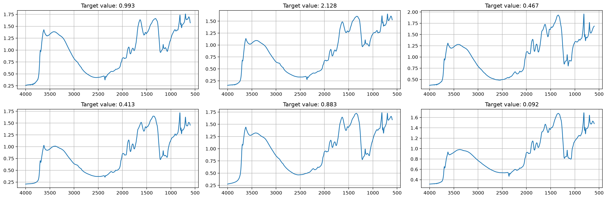

from soilspecdl.datasets import load_toy_ksslDataLoader
Build fastai DataLoaders from soil spectra
The examples use the toy dataset from soilspecdl.datasets: 500 KSSL MIR spectra, here with their exchangeable potassium (Kex) values:
toy = load_toy_kssl()
X, y, ids = toy.xy('k.ext_usda.a725_cmolc.kg')
y, wns = y.flatten(), toy.wavenumbers
X.shape, y.shape, wns[[0, -1]]((500, 1701), (500,), array([ 600, 4000]))Splitters
A splitter takes the spectra X and the targets y, and returns train, validation and test indices. get_ks_splitter uses the Kennard-Stone algorithm, which selects samples by their distances in spectral space:
get_ks_splitter
def get_ks_splitter(
test_size:float=0.1, # Proportion of data to hold out for testing
valid_size:float=0.1, # Proportion of remaining data after test holdout for validation
)-><built-in function callable>: # Function splitting (X,y) into train/valid/test idxsCreate a Kennard-Stone splitter returning train, validation and test indices
train_idx, valid_idx, test_idx = get_ks_splitter()(X, y)
test_eq(len(train_idx) + len(valid_idx) + len(test_idx), len(X))
len(train_idx), len(valid_idx), len(test_idx)(400, 50, 50)get_splitter shuffles the samples with a fixed seed, then cuts them into train, validation and test sets. The test set takes the samples that train and validation leave:
get_splitter
def get_splitter(
train_pct:float=0.8, # Proportion of data for training
valid_pct:float=0.1, # Proportion of data for validation
seed:int=42, # Random seed for reproducibility
)-><built-in function callable>: # Function splitting (X,y) into train/valid/test idxsCreate a random splitter returning train, validation and test indices
train_idx, valid_idx, test_idx = get_splitter()(X, y)
test_eq((len(train_idx), len(valid_idx), len(test_idx)), (400, 50, 50))
len(train_idx), len(valid_idx), len(test_idx)(400, 50, 50)Proportions whose sum exceeds 1 leave no valid test set, so get_splitter raises a ValueError as soon as it is created:
expect_fail(lambda: get_splitter(train_pct=0.8, valid_pct=0.5), contains='must not exceed 1')<contextlib._GeneratorContextManager>get_pre_splitter
def get_pre_splitter(
n_train, # Number of rows in the existing training set
valid_pct:float=0.2, # Proportion of training samples for validation
seed:int=42, # Random seed for reproducibility
)-><built-in function callable>: # Function splitting (X,y) into train/valid/test idxsCreate a splitter for data whose first n_train rows form the training set
get_pre_splitter suits datasets that come already split into train and test sets. Put the training rows first: the first n_train rows become train and validation, and the rest become the test set. With 100 samples and n_train=80, 20% of the training rows go to validation:
train_idx, valid_idx, test_idx = get_pre_splitter(n_train=80)(np.zeros((100, 5)), np.zeros(100))
test_eq(test_idx, np.arange(80, 100))
len(train_idx), len(valid_idx), len(test_idx)(64, 16, 20)Data loader
TensorSpectrum holds spectra as a fastai tensor. show plots a spectrum against its wavenumbers, with the wavenumber axis decreasing from left to right, as is usual for infrared spectra:
TensorSpectrum
def TensorSpectrum(
*args, **kwargs
):Spectra tensor that plots each spectrum against its wavenumbers in wns
TensorSpectrum(X[0], wns=wns)/Users/franckalbinet/pro/dev/soilspecdl/.venv/lib/python3.12/site-packages/fastai/torch_core.py:140: UserWarning: The given NumPy array is not writable, and PyTorch does not support non-writable tensors. This means writing to this tensor will result in undefined behavior. You may want to copy the array to protect its data or make it writable before converting it to a tensor. This type of warning will be suppressed for the rest of this program. (Triggered internally at /Users/runner/work/pytorch/pytorch/torch/csrc/utils/tensor_numpy.cpp:219.)
t = torch.as_tensor(x, **kwargs)TensorSpectrum(shape=(1701,))Each spectrum stores its own wavenumbers in wns. Spectra on different grids can therefore coexist in one session. This example creates an OSSL spectrum (600–4000 cm⁻¹, step 2) and a Fukushima spectrum (685–3965 cm⁻¹, step 5). Tensor operations, batching and indexing keep wns:
ossl_spc = TensorSpectrum(torch.randn(1, 1701), wns=np.arange(600, 4001, 2))
fuku_spc = TensorSpectrum(torch.randn(1, 657), wns=np.arange(685, 3966, 5))
scaled = ossl_spc * 2
test_eq(scaled.wns, ossl_spc.wns)
test_eq(len(fuku_spc.wns), 657)
scaled.wns[[0, -1]], fuku_spc.wns[[0, -1]](array([ 600, 4000]), array([ 685, 3965]))show_batch plots a batch of spectra in a grid, with each sample’s target as its title. fastai calls it from dls.show_batch:
SpectralBlock is the fastai block for spectra. It turns each row of the spectra matrix into a TensorSpectrum that carries the wavenumbers:
SpectralBlock
def SpectralBlock(
wns, # Wavenumbers, attached to each spectrum as `wns`
):Block turning each spectrum array into a TensorSpectrum carrying wns
get_spectral_dls
def get_spectral_dls(
X, # Spectral data matrix
y, # Target values
wns, # Wavenumbers
splitter:NoneType=None, # Function returning train/valid/test idxs
bs:int=32, # Batch size
batch_tfms:NoneType=None, # Batch transforms, e.g. [StandardizeSpectrum()]
)->tuple: # (DataLoaders with the grid in `dls.wns`, test set indices)Create DataLoaders for spectra, with train, validation and test sets
By default, get_spectral_dls splits the samples at random with get_splitter. show_batch plots spectra with their target values as titles:
dls, test_idx = get_spectral_dls(X, y, wns)
dls.show_batch(max_n=6, ncols=3)
Pass splitter to split another way, for example with Kennard-Stone:
dls_ks, test_idx_ks = get_spectral_dls(X, y, wns, splitter=get_ks_splitter())
len(dls_ks.train_ds), len(dls_ks.valid_ds), len(test_idx_ks)(400, 50, 50)get_spectral_dls checks that wns has one value per column of X. A mismatch raises a ValueError. Here an OSSL grid of 1,701 wavenumbers is passed with 657-column Fukushima-like spectra:
expect_fail(lambda: get_spectral_dls(np.random.rand(20, 657), np.random.rand(20), np.arange(600, 4001, 2)), contains='`wns` has 1701 values')<contextlib._GeneratorContextManager>The grid is a property of the dataset, so the DataLoaders stores it once in dls.wns. Code that needs the grid reads it there. Each spectrum also carries a copy, because show_batch receives spectra without their DataLoaders:
fuku_wns = np.arange(685, 3966, 5)
dls_syn, _ = get_spectral_dls(np.random.rand(100, 657), np.random.rand(100), fuku_wns)
test_eq(dls_syn.wns, fuku_wns)
test_eq(dls_syn.one_batch()[0].wns, dls_syn.wns)
dls_syn.wns[[0, -1]]array([ 685, 3965])